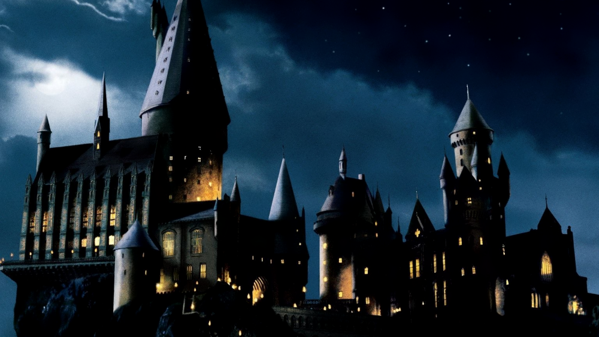

back and forth/h1>

Date
01 January, 2022
Featuring
—

| Date | 01 January, 2022 |
| Featuring | — |
We’re 12 hours into the new year. Every year, I have this almost childlike expectation that suddenly, because it’s a new year, everything will be different. Of course, that’s not how it works. The world keeps turning, and it’s pretty much the same old, business as usual.
I stayed up til about 3am last night eating my body weight in chocolate. Rang in the new year with the London light show and fireworks – a bit underwhelming this time around, but it still made a change for it not to be bog standard fireworks on the London Eye again. The view from my room also gave me way more local fireworks than I’ve ever been used to, so it was pops and bangs all round. I paid a moment’s thought to Millie, and was grateful she wasn’t here to deal with all the noise.
HBO premiered a Harry Potter 20th anniversary reunion special today – Return to Hogwarts. Two hours of throwbacks, talking heads, waxing lyrical about the wizarding world. I really enjoyed it. The special was full of archive clips, of Richard Harris, of Alan Rickman, of JK Rowling, and it covered all eight of the films beautifully. I teared up a couple of times. It’s easy to forget just how monumental and huge the series was at the time. I don’t rewatch HPoften anymore, but the wonderful memories are still there and they take me back to a much more innocent time in my life.
New Year is always quiet and low-key for me. I try to remain positive and optimistic, and I try not to dwell too much on the past. I know, though, that come tomorrow when I’m back at work, back doing the daily grind, the repetition of life will return and the routine will come back. Today, however, is for just existing and feeling mellow. Nothing really matters today – it’s just a day to chill out, forget the endless problems of the world.